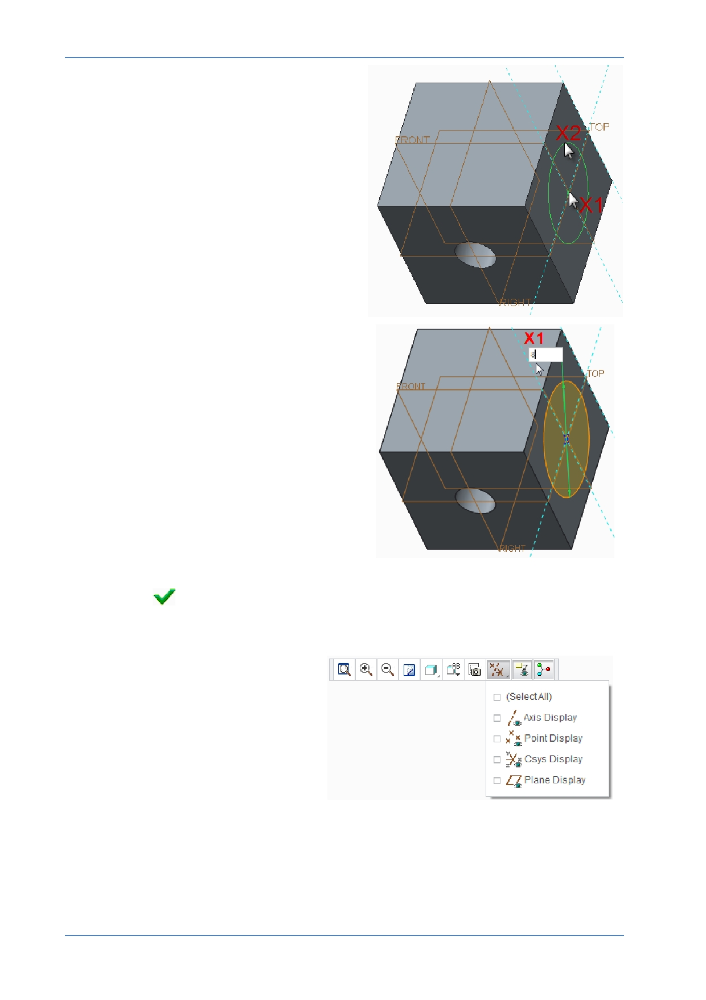

PTC Academic Program
Move the cursor until it snaps to the
intersection of both reference lines in
the center of the sketch plane and click
( X1) to place the center of the circle.
Move the cursor away from the center
and click at X2 to complete the circle.
Middle-click in the graphics area to
deselect the circle tool.
6. Edit the diameter of the circle:
Double click the diameter dimension
value X1 , then type 8 and press
ENTER .
The circle will resize as soon as you press
ENTER.
7. Click OK
from the Close group of the Sketch tab to complete the sketch and
return to the Extrude dashboard.
8. Disable the display of all datum
features.
© 2012 PTC
Creo Parametric 2.0 Primer
Page 31